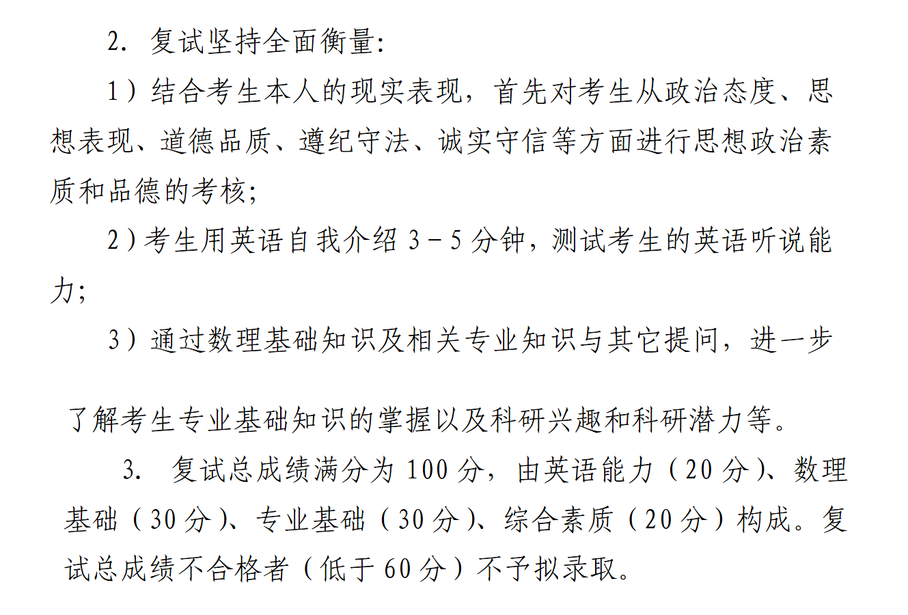

FIELD NOTE / 2026
北京航空航天大学人工智能学院
预推免
没有单独机试，要求 3–5 分钟英文自我介绍，并有英文翻译。
无独立机试英文介绍 3–5 分钟单人面试约 20 分钟
01 / 整体流程与考核构成
- 我参加的是人工智能学院预推免，这一学院没有机试，主要就是当天的问卷填写和正式面试。早上先填写一份调查问卷，内容包括心理状态、个人意向等基本情况，按实际情况填写即可，不需要专门准备。
- 正式面试每人大约 20 分钟。官方考核强调英语、数理基础、专业基础和综合素质等方面，其中英语能力 20 分、数理基础 30 分、专业基础 30 分、综合素质 20 分，总分 100 分，低于 60 分不予拟录取。
- 官方要求英语自我介绍约 3～5 分钟，并通过数理基础、专业知识及其他提问进一步了解专业基础、科研兴趣和科研潜力。

02 / 我的实际面试流程与体验
- 进入考场后，会先让考生宣读相关考核规则。之后首先进行 3～5 分钟的全英文自我介绍，这一部分需要提前准备，时间明显比很多学校的一分钟英文介绍更长。
- 英文自我介绍之后还有英语翻译。现场会给出 3 道英文材料，从中选择 2 道进行翻译。我当时抽到的内容难度很高，几乎没有马上反应出来，最后只能选两道磕磕绊绊地完成翻译，因此这一部分发挥得比较一般。
- 之后进入正式专业问答。我个人感觉北航人工智能学院的面试压力相对较大：部分问题本身比较开放、也比较难回答，老师会根据你的回答继续追问，有时也会在回答过程中直接打断，再从新的角度继续提问。
03 / 正式面试问题整理
- 人工智能与数学：当前很多人工智能方法都建立在一定的数学原理之上，请举出两个具体的人工智能方法，并说明它们背后涉及的数学原理。
- 机器学习：在机器学习算法中，你最熟悉哪一种算法？请详细介绍该算法的基本原理和数学公式，并说明它的主要优点和局限性。
- 科研经历：请介绍你在科研项目中主要负责哪些部分，以及具体完成了哪些工作。
- 综合素质 / 思政：国家近期发布了与人工智能安全相关的政策，你对此有什么看法？
- 英文部分：3～5 分钟全英文自我介绍；之后从 3 道英文翻译题中选择 2 道作答。
04 / 不同学院考核形式的差异
- 我报考的人工智能学院没有机试，但北航其他部分学院会设置机试，例如软件学院和计算机学院。不同学院的考核形式差异比较大，报名时需要单独查看目标学院当年的通知。
- 我当时了解到，软件学院机试只能使用 C 语言，不能使用 C++；考试形式为开卷，可以携带纸质资料。因此即使都属于计算机相关学院，也不能按照同一套方式准备。
05 / 最终结果
- 我最终进入候补，后续候补顺延成功。